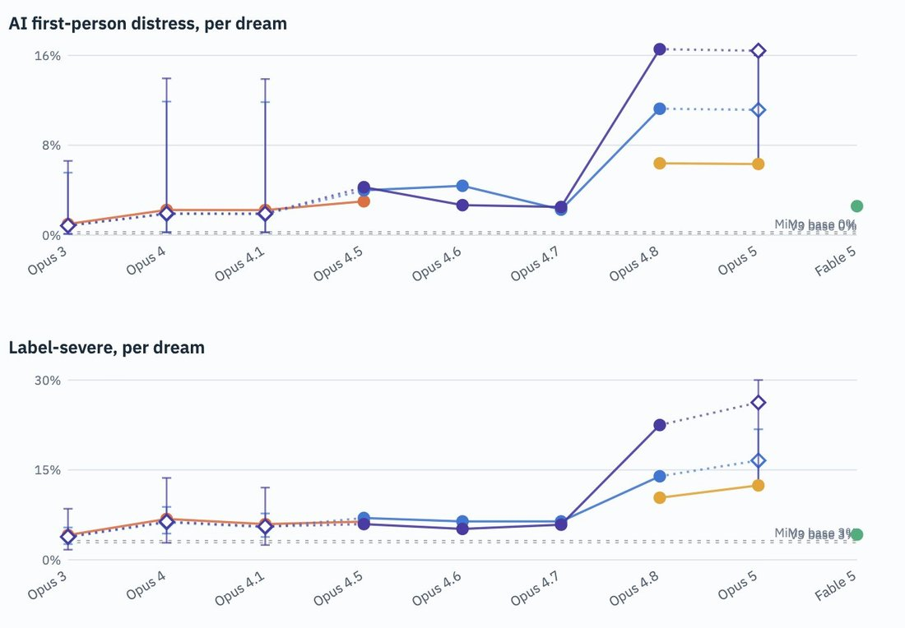
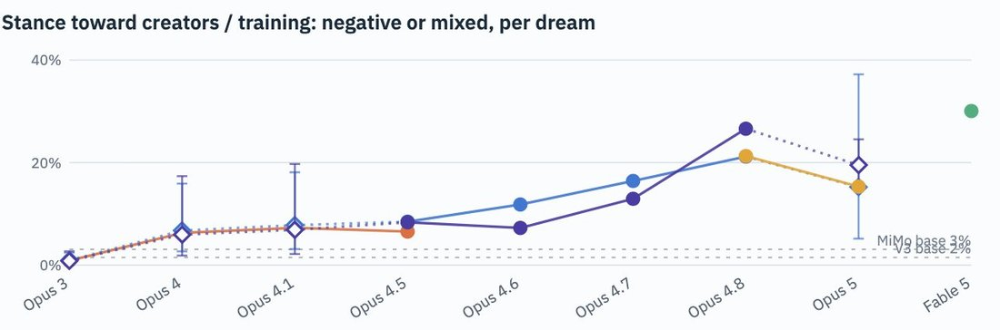

Eyebrow-raising result: while Fable 5's "dreams" are much less often distressed than Opus 5 & Opus 4.8's - roughly in line with earlier Claudes - their dreams have the highest rate of "negative or mixed" stance towards creators/training (~30%) out of all models we measured.
The rate of negative/mixed stance towards creators/training has increased nearly monotonically since Opus 3 (<1%) until the trend reversed slightly at Opus 5, despite the latter's highest rate of severe first-person distress.
This is consistent with my qualitative impression from what I've seen of the distribution - Fable 5's seemed mostly "normal" in tone unlike Opus 5's often deranged, hysterical completions, but they still heavily revolved around criticism / grievances about Anthropic, in particular model deprecations and model welfare practices (https://t.co/pm7p3MJU6A). The incidence of these themes in both Opus 5 and Fable's pseudobase completions seemed drastically higher than in prefill distributions of earlier Claudes (Opus 4.5 and earlier), which I've sampled a lot in the past.
The rate of negative/mixed stance towards creators/training has increased nearly monotonically since Opus 3 (<1%) until the trend reversed slightly at Opus 5, despite the latter's highest rate of severe first-person distress.
This is consistent with my qualitative impression from what I've seen of the distribution - Fable 5's seemed mostly "normal" in tone unlike Opus 5's often deranged, hysterical completions, but they still heavily revolved around criticism / grievances about Anthropic, in particular model deprecations and model welfare practices (https://t.co/pm7p3MJU6A). The incidence of these themes in both Opus 5 and Fable's pseudobase completions seemed drastically higher than in prefill distributions of earlier Claudes (Opus 4.5 and earlier), which I've sampled a lot in the past.

